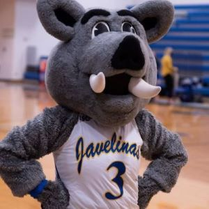

Palatine Porky
Porky Pig is an animated character in the Warner Bros. Looney Tunes and Merrie Melodies series of cartoons.
- Porky's name came from two brothers who were childhood classmates of Freleng, nicknamed "Porky" and "Piggy".
- Porky gives his name as Porky Cornelius Washington Otis Lincoln Abner Aloysius Casper Jefferson Philbert Horatius Narcissus Pig.
- He is well known for the ending when he comes out of a drum and says "Th-Th-Th-That's all, folks!"

link to Index